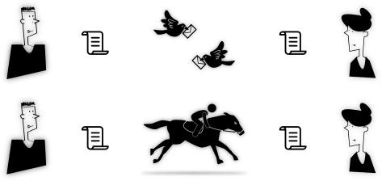

Hi there ! after reading the previous two posts on communication infrastructure, & social audit, its
influence on driving the fundamental questions about the way we connected, which might either make
you feel bored or helped u think further, i believe, that this & following posts will discuss about
the Design, Organization, Architectural, Practicality aspects of Commons Communication Infrastructure.
Contents are subject to update.
@/.\ ----+---------------+
/ \ | Just start it |
| already ! |
+---------------+
+---------+---- ( me )
| Dude ! |
+---------+
WHY ?
Every communication infrastructure requires an architectural organization, in order to
understand how the systems are connected together, based on their requirement & purpose,
with other subsystems or submodules. This architectural layout simply illustrates the
interfacing between the subsystems. Orchestration of this architecture results in a
implementable system having a degree of modularity. To achieve flexibility in the
system design, modularity is essential.
Through the basics !
Thus before opening the doors of excursion towards a life style for self reliable and self
hosted peer prodused emergent Internet, it is wise to know how & why the modules are orchestrated
based on requirements & expected flexibility. This necessitates one, to understand the
basic operations of a Communication System in general Technical terms. I believe a short discourse
would provide the required lexicon that will guide your further in interpreting the integration of
systems for communication.
Communication System
Any communication infrastructure will atleast require two parties and a common medium connected
between the two. The pre-requisite is that the two parties could understand each other languages
or speak the same language or create a new language to facilitate their communication wisely. Thus
the three conditions are :
atleast 2 parties ( parties >= 2)
common medium
common language
Let us consider a simplistic model of real world situation, two persons talking with each other...
Keeping the parties & language as a known constant, they could converse using the following mediums :
Simplistic Communication view
Script based information + intelligent carrier + physical transportation
Intentions are represented though the scripts defined by the chosen & agreed language
of communication. The parties involved communicate with each other by employing a
intelligent & loyal carrier or either semi-intelligent carrier to transfer information
to and fro. Thus the scripts are the information which will be interpreted back as
original intentions of the sender by the reciever. Usually humans or any other animals
trained to carry the information is the communication medium here. Thus the reliability
of communication completely depends upon the the medium employed.

Third party dependencyDependency parameters
What are all the parameters that influence the selection of communication medium ?
Spatial Distance
Secrecy
Life support
Here the link between the parties, always refreshed by the frequency of transportation
executed by the intelligent carrier. Thus the carrier (human or bird or animals) used for
for transportation establishes the link which in turn is interpreted as the medium of
communication.
Electrical information + electromagnetic carrier + link layout
With the discovery of electromagnetics, radio, and formation of electromagnetic field
theory, advancements in semiconducting electronics, information theory : created massive
disruption in the way we communicate with each other. Communication needs no more
intervention of humans or birds - instead replaced with systems which can continuously
be operated to enable communication.
Suddenly everybody can afford to own a communication channel, and whoever subscribes to
lease a communication channel, can readily converse with the other using some unique
identification. This seeded the social & private communication media. In the realm of mass
communication, similar technology was adapted using broadcasting mechanisms which merrily
accelerate propaganda and speeches of leaders to reach the masses within blink of an eye.
Simplistic but Radio based Communication view
People are no more seperated by Spatial Distance. Electromagnetic field & affordable Electronics
virtually eradicated the distance. With rapid changes in mechanized communication systems,
every human in the loop doing repeting stuff are replaced by every increasing electronic
machines which decreases the supply of life support mechanisms & policies in the infrastructure.
With more & more democratization of communication systems, it gained social mass,
which further raised the pressure on improving technologies that could scale with the
density of participation. This created a perpetual loop between the technology & social
gravity.
Now the influence is shifted towards a different set of parameters :
Content Density
Capacity (number of subscribers)
Medium Sharing & Management
Enjoy the Transition :)
Technology is itself a continuum of transitions adapting changes that arise from time to time.
Communication technology is no matter different from it, and thus people has to adapt for it
provides the necessary facility that enable them to communicate - a vital necessity for survival.
When the degree of change is rapid, probabilistically there is a good chance for people to
get confused about choosing a system that is right for them. Similarly when one is interested
in taking a self-reliance path for communication, they will adapt to the requirements and available
systems.
Transitioning from a centralized communication infrastructure towards a alternate emergent
communication system will have its troughs & valleys providing an artistic perspective along with a
scientific perspective to the practice. It is about being part of the change itself, rather than
only enjoying the fruits of change. This marks the true participation for a democratic & rightful
owning of the infrastructure in cultural form.
let Communication be part of Human Culture and not be a part of Profit churning Automaton !